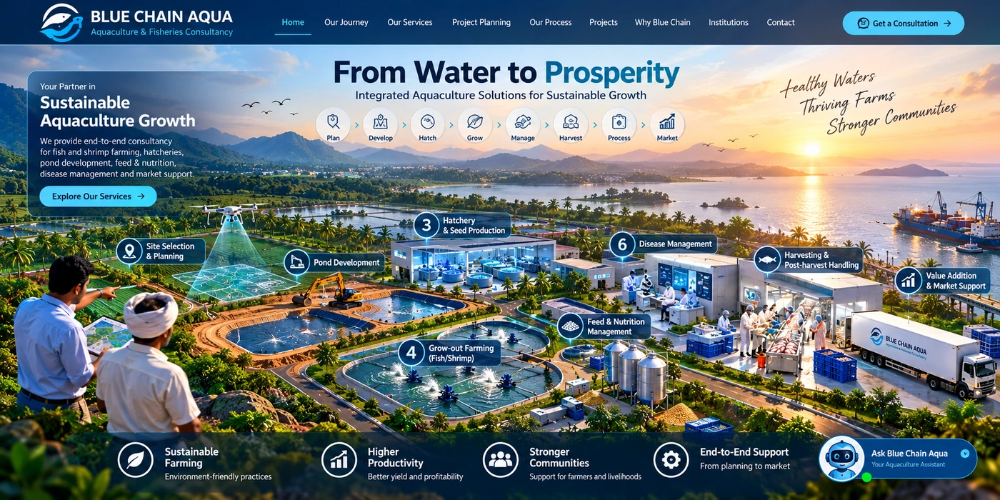
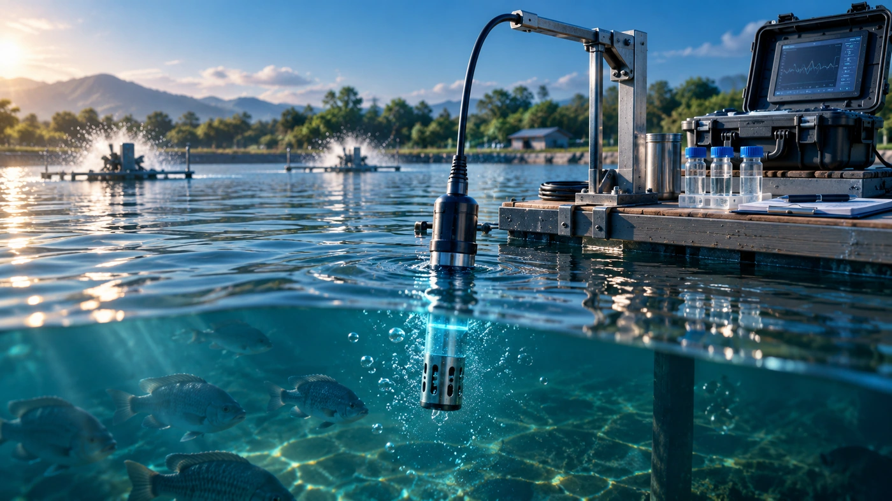
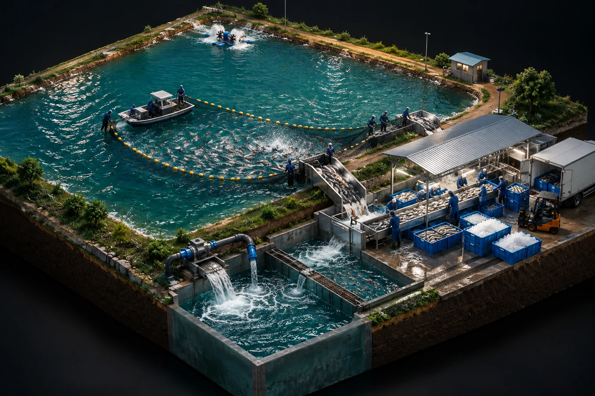
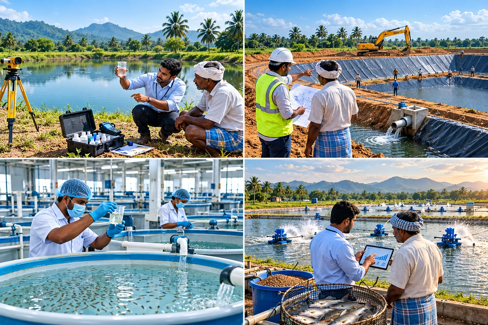
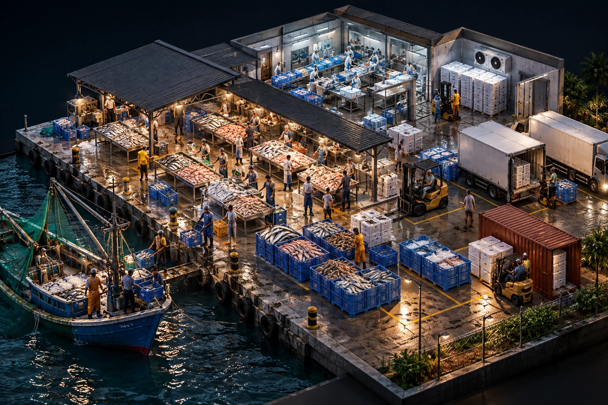
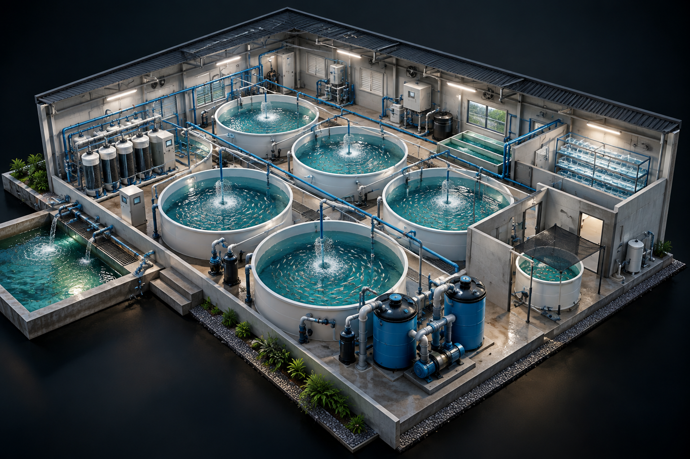
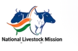
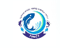

01
Detailed Project Reports (DPR)
Government-compliant and technically rigorous DPRs for successful applications.
Start with the right water, land and environmental conditions. We assess the site before capital is committed.
Each stage above is a real project decision. Scroll through the sequence to see how Blue Chain Aqua connects technical planning, government schemes, finance and implementation into one continuous pathway.
India is the 2nd largest fish producer globally, contributing approximately 8% of global fish production. The government has committed ₹20,050 crore under PMMSY — targeting 22 MMT fish production and 5.5 lakh new jobs.
Know How We Help →Government-compliant and technically rigorous DPRs for successful applications.
Cost estimation, loan structuring, subsidy mapping and ROI projections.
Site analysis, water, soil, species viability and regulatory compliance.
Measure production outcomes, economic impact and scheme compliance.
From inputs to market — improve profitability across the value chain.
End-to-end support with NFDB, PMMSY, NABARD and banks.
Follow the project journey step by step — from site selection and water planning to farming, hatchery, RAS and value addition.
Every project starts with the right questions: Is the site suitable? What production systems fit? What will it cost? How will the project be funded and operated?

01Assess land, water availability, access and site suitability before detailed planning.
Plan pond layout, infrastructure, production capacity and practical farm operations.

03Plan water-quality management and monitoring to support stable production.

04Plan tanks, filtration, circulation and operational requirements for intensive production.

05Develop hatchery and seed-production plans around species, capacity and market requirements.

06Connect production with handling, processing, cold-chain and market opportunities.
Combine production, infrastructure, processing and supporting facilities into one practical, fund-ready project concept.
Explore Projects →
Official portals for fisheries, aquaculture, rural finance, food processing, horticulture and livestock programmes. Select an organization to visit its official website.
 NABARD
NABARD
Agriculture, rural development & project finance.
Official website ↗ NABCONS
NABCONS
Consultancy & project development.
Official website ↗ MOFAHD
MOFAHD
Fisheries policy, schemes & development.
Official website ↗ MOFPI
MOFPI
Food processing & value addition.
Official website ↗ NHB
NHB
Horticulture development & infrastructure.
Official website ↗ NFDB
NFDB
Fisheries & aquaculture development.
Official website ↗
NLMCentrally sponsored livestock development scheme.
Official website ↗
NFDPDigital platform for fisheries & aquaculture stakeholders.
Official website ↗Six clear stages from assessment through sanction and implementation.
Assess profile, land, water and finances.
Find the best-fit schemes and funding pathway.
Prepare technical and financial documents.
Liaise with authorities and manage approvals.
Coordinate with banks and government.
Guidance until the project is operational.
“From the first application to the final harvest — we're with you at every step.”
Explore our completed project portfolio across India. Click a highlighted state on the map to view the projects associated with that location.
Highlighted states have projects. Click a state to view its project list.
Our team understands NFDB, Ministry of Fisheries and state requirements.
Civil engineering, aquaculture science and financial analysis under one roof.
Support with project finance, banking requirements, loan documentation and financial planning.
Professional support for financial analysis, project documentation, accounting and compliance requirements.
Maximise subsidy benefit while protecting project viability.
“Blue Chain Aqua made the complex simple. We got our sanction without any hassle.”
— Aquaculture Farmer, Andhra PradeshFill in the form below and continue to WhatsApp
These pages explain how Blue Chain Aqua handles enquiries and how website information should be used when exploring aquaculture and fisheries projects.
How we use information submitted through the website.
When you contact us, you may provide your name, mobile number, email address and project or consultation details.
We use submitted details to respond to enquiries, understand your requirements and provide project-related communication.
We do not publish or sell submitted contact information. Please avoid sending passwords, payment credentials or other highly sensitive information through the enquiry form.
Website analytics may be used to understand visits and improve the website experience. Analytics information is handled by the relevant service provider.
Guidance for using the Blue Chain Aqua website and its information.
Website content is provided for general project-planning and informational purposes and may not cover every project, location or regulatory requirement.
Technical, financial, regulatory, subsidy and funding decisions are confirmed for each project after the relevant assessment and verification.
Links to government organisations and other resources are provided for convenience. Their own websites and terms apply when you visit them.
Please use the website lawfully and provide accurate information when submitting a project enquiry so that we can respond appropriately.